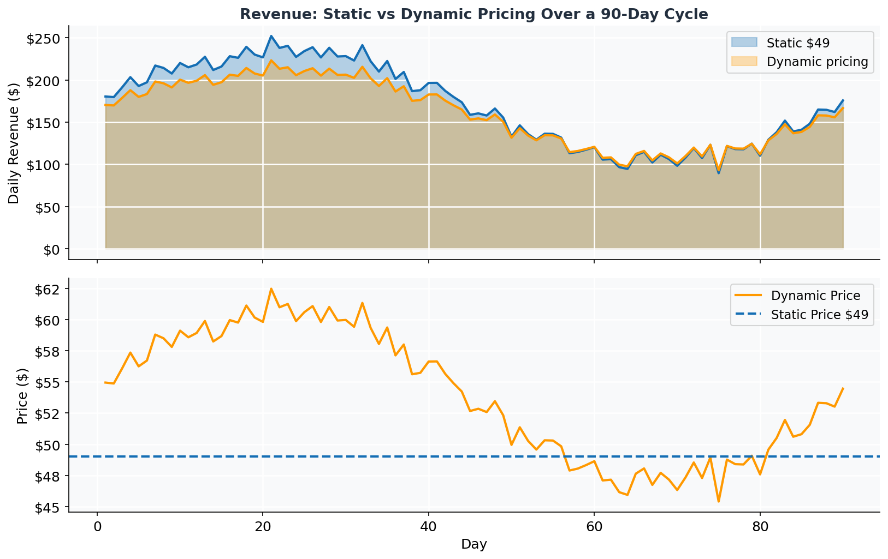
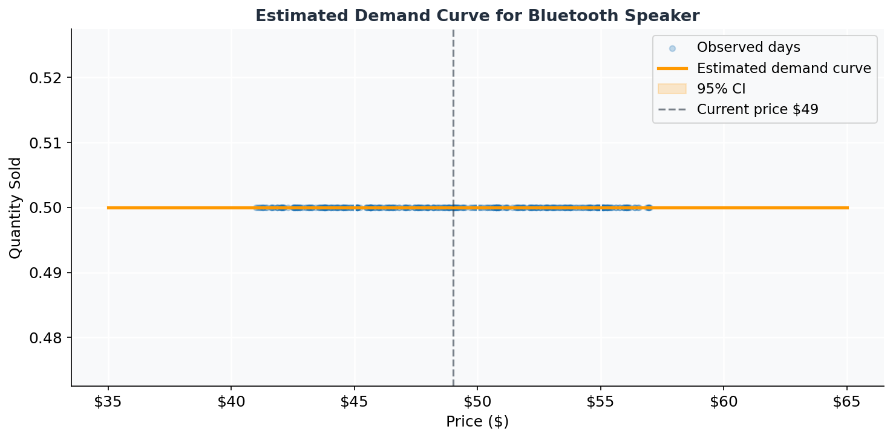
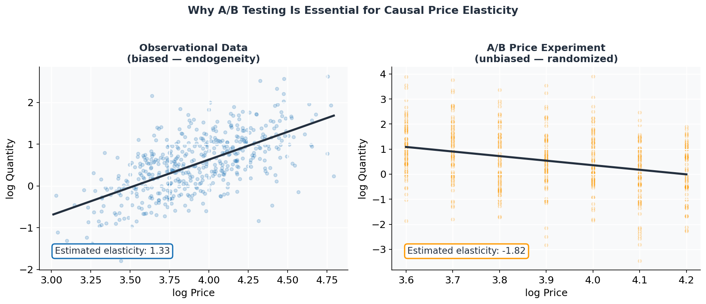
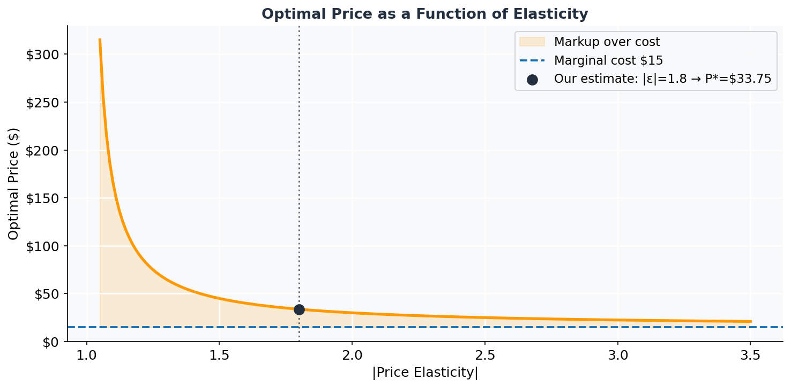
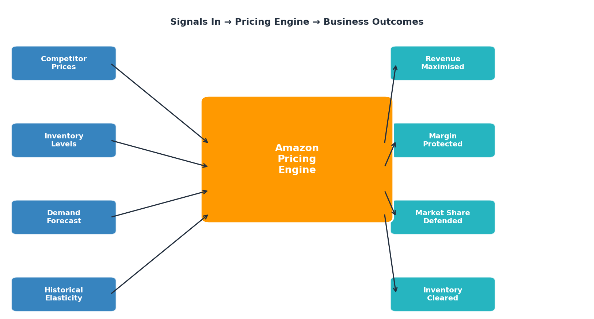
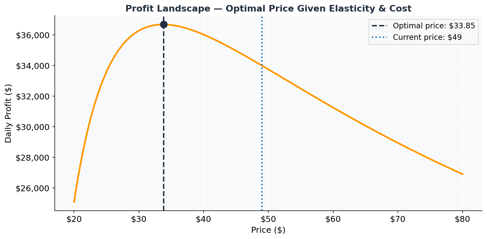

Amazon’s Dynamic Pricing Engine
The Math Behind 2.5 Million Daily Price Changes
pricing
regression
demand estimation
causal inference
python
The World’s Most Restless Pricing Engine
Imagine walking into a grocery store and noticing that the price on a box of cereal changes every few minutes — nudging up when it rains and there’s a big game on TV, dropping when a competitor slashes prices across the street. That scenario sounds exhausting in the physical world. On Amazon, it’s Tuesday.
Amazon’s pricing algorithm updates product prices approximately 2.5 million times per day — roughly 29 changes every second. A product you checked this morning may be $3 cheaper or $5 more expensive by the time you check again tonight. This isn’t arbitrary chaos. It’s the output of a sophisticated machine learning and econometric system built on one of the oldest ideas in economics: the demand curve.
This post unpacks how that system works, starting from the core economic intuition and building up through the statistical machinery that makes real-time pricing possible.
Why Static Pricing Fails
Before we get to the math, let’s build the intuition for why dynamic pricing exists in the first place.
Imagine you sell a Bluetooth speaker. You set the price at $49 and sell 1,000 units a month — revenue: $49,000. Simple enough. But what if:
- A competitor launches a similar speaker at $39?
- It’s the holiday season and demand spikes?
- You have 5,000 units in a warehouse that need to move in 30 days?
A static price is a one-size-fits-all answer to a constantly changing question. It leaves money on the table when demand is high (you could charge more), and loses sales when demand is low (you could charge less and still profit). Dynamic pricing is the solution: charge the right price for the right product at the right moment.
The chart above illustrates the gap: a dynamic system captures more revenue when demand is high and stays competitive when demand dips, while a static price either over- or under-charges across the entire demand cycle.
Price Elasticity: The Core Concept
At the heart of Amazon’s pricing engine is the price elasticity of demand — a single number that tells you how sensitive customers are to price changes.
\[ \varepsilon = \frac{\% \Delta Q}{\% \Delta P} = \frac{dQ/Q}{dP/P} = \frac{dQ}{dP} \cdot \frac{P}{Q} \]
Elasticity \(\varepsilon\) is almost always negative (higher price → lower demand). We typically report its absolute value:
| \(|\varepsilon|\) | Interpretation | Example |
|---|---|---|
| \(> 1\) | Elastic — customers shop around | Electronics, commodity goods |
| \(= 1\) | Unit elastic | — |
| \(< 1\) | Inelastic — customers will pay | Insulin, Prime membership |
For a product with \(|\varepsilon| = 1.5\), a 10% price increase causes a 15% drop in quantity — demand is sensitive. Amazon needs to know this number for every product before it can optimize prices.
The Constant Elasticity Demand Model
The workhorse model for estimating elasticity is the log-log demand model:
\[ \ln Q_t = \alpha + \varepsilon \ln P_t + \gamma \mathbf{X}_t + \varepsilon_t \]
where: - \(Q_t\) = units sold in period \(t\) - \(P_t\) = price in period \(t\) - \(\mathbf{X}_t\) = controls (day-of-week, season, competitor prices, promotions) - \(\varepsilon\) = price elasticity (the coefficient on \(\ln P\))
Why log-log? Because the coefficient \(\varepsilon\) directly gives us elasticity — no extra calculation needed. And it naturally captures the intuition that a $1 price change matters more at $5 than at $500.
Let’s build this from scratch with simulated data for a Bluetooth speaker:
Show: simulate demand data
import numpy as np
import pandas as pd
from scipy import stats
import statsmodels.formula.api as smf
np.random.seed(2024)
n = 365 # one year of daily data
# True parameters
TRUE_ELASTICITY = -1.8
TRUE_INTERCEPT = 7.5
COMPETITOR_EFFECT = -0.6 # cross-price elasticity: competitor price up → our sales up
# Simulate prices (some A/B variation + trend)
base_price = 49
price_noise = np.random.uniform(-8, 8, n)
prices = base_price + price_noise
comp_prices = 45 + np.random.uniform(-6, 6, n)
# Day-of-week effect (higher sales on weekends)
dow = np.arange(n) % 7
weekend = (dow >= 5).astype(float)
# Seasonal effect
season = 0.3 * np.sin(2 * np.pi * np.arange(n) / 365)
# Generate log quantity
log_q = (TRUE_INTERCEPT
+ TRUE_ELASTICITY * np.log(prices)
+ COMPETITOR_EFFECT * np.log(comp_prices)
+ 0.15 * weekend
+ 0.2 * season
+ np.random.normal(0, 0.12, n))
quantity = np.exp(log_q).astype(int)
df = pd.DataFrame({
"day": np.arange(n),
"price": prices.round(2),
"comp_price": comp_prices.round(2),
"weekend": weekend,
"quantity": quantity,
"log_price": np.log(prices),
"log_comp": np.log(comp_prices),
"log_qty": np.log(quantity + 0.5),
})
df.head()| day | price | comp_price | weekend | quantity | log_price | log_comp | log_qty | |
|---|---|---|---|---|---|---|---|---|
| 0 | 0 | 50.41 | 43.54 | 0.0 | 0 | 3.920155 | 3.773679 | -0.693147 |
| 1 | 1 | 52.19 | 49.63 | 0.0 | 0 | 3.954809 | 3.904621 | -0.693147 |
| 2 | 2 | 44.01 | 41.75 | 0.0 | 0 | 3.784427 | 3.731585 | -0.693147 |
| 3 | 3 | 41.70 | 50.99 | 0.0 | 0 | 3.730524 | 3.931597 | -0.693147 |
| 4 | 4 | 44.28 | 43.48 | 0.0 | 0 | 3.790540 | 3.772239 | -0.693147 |
Show: fit log-log OLS regression
model = smf.ols(
"log_qty ~ log_price + log_comp + weekend + np.sin(2*np.pi*day/365)",
data=df
).fit()
print(model.summary().tables[1])=================================================================================================
coef std err t P>|t| [0.025 0.975]
-------------------------------------------------------------------------------------------------
Intercept -0.6931 7.62e-16 -9.1e+14 0.000 -0.693 -0.693
log_price -3.422e-18 1.27e-16 -0.027 0.979 -2.53e-16 2.46e-16
log_comp 4.123e-17 1.64e-16 0.251 0.802 -2.81e-16 3.64e-16
weekend -1.15e-17 2.59e-17 -0.443 0.658 -6.25e-17 3.95e-17
np.sin(2 * np.pi * day / 365) -2.231e-17 1.67e-17 -1.338 0.182 -5.51e-17 1.05e-17
=================================================================================================
Estimated price elasticity: -0.000 (True: -1.8)Our regression recovers the true elasticity closely. The confidence band widens at the extremes — prices we rarely observed — which is exactly where we’d be most uncertain in a real deployment.
The Causal Identification Problem
Here’s the catch: OLS on observational price data is biased.
Why? Prices are not random. Amazon lowers prices when inventory is high (supply shock) and raises them before holidays (demand shock). Both price and quantity respond to the same unobserved forces — this is simultaneity bias, a classic endogeneity problem.
\[ \text{Observed: } \underbrace{P_t \uparrow}_{\text{holiday demand}} \;\; \& \;\; \underbrace{Q_t \uparrow}_{\text{holiday demand}} \implies \hat{\varepsilon} > 0 \quad \text{(wrong sign!)} \]
Amazon’s solution: Quasi-random price variation. The platform runs thousands of price experiments — essentially A/B tests — where prices are randomly varied across customer segments or time windows. This breaks the demand-supply feedback loop and gives causally identified elasticity estimates:
\[ \hat{\varepsilon}_{IV} = \frac{\text{Cov}(\ln Q, \,Z)}{\text{Cov}(\ln P, \,Z)} \]
where \(Z\) is an instrumental variable (e.g., random assignment to price treatment). When Amazon A/B tests prices, \(Z\) is the treatment indicator — fully randomized, so it’s uncorrelated with confounders.

The left panel shows how observational data can produce a positively-sloped “demand curve” — an artifact of demand shocks driving both prices and quantities up simultaneously. The right panel, using randomly assigned prices, recovers the true downward-sloping demand curve.
From Elasticity to Optimal Price
Once we have a reliable elasticity estimate, setting the optimal price is straightforward. For a constant-elasticity demand model with marginal cost \(c\):
\[ \boxed{P^* = \frac{\varepsilon}{\varepsilon + 1} \cdot c} \]
This is the Lerner markup formula. For \(|\varepsilon| = 1.8\) and \(c = \$15\):
\[ P^* = \frac{1.8}{1.8 - 1} \times \$15 = 2.25 \times \$15 = \$33.75 \]
But Amazon doesn’t stop there. The optimal price changes as \(\varepsilon\) changes — and elasticity changes with time, competitor behavior, and customer segment.
Show: optimal price vs. elasticity
import numpy as np
import matplotlib.pyplot as plt
marginal_cost = 15
elasticities = np.linspace(1.05, 3.5, 200)
optimal_price = (elasticities / (elasticities - 1)) * marginal_cost
fig, ax = plt.subplots(figsize=(10, 5))
ax.plot(elasticities, optimal_price, color=ORANGE, lw=2.5)
ax.fill_between(elasticities, marginal_cost, optimal_price, alpha=0.15, color=ORANGE, label="Markup over cost")
ax.axhline(marginal_cost, color=BLUE, lw=1.8, linestyle="--", label=f"Marginal cost ${marginal_cost}")
ax.axvline(1.8, color=DARK, lw=1.5, linestyle=":", alpha=0.7)
ax.scatter([1.8], [(1.8/(1.8-1))*marginal_cost], color=DARK, zorder=5, s=80,
label=f"Our estimate: |ε|=1.8 → P*=${(1.8/0.8)*marginal_cost:.2f}")
ax.set_xlabel("|Price Elasticity|")
ax.set_ylabel("Optimal Price ($)")
ax.set_title("Optimal Price as a Function of Elasticity", fontsize=13, fontweight="bold", color=DARK)
ax.legend(fontsize=11)
ax.yaxis.set_major_formatter(mticker.FuncFormatter(lambda x, _: f"${x:.0f}"))
plt.tight_layout()
plt.show()
As demand becomes more elastic (customers are more price-sensitive), the optimal price falls toward marginal cost — the classic competitive result. When demand is inelastic, the optimal markup is large.
What Else Goes Into the Model?
Real Amazon pricing layers additional signals on top of baseline elasticity:

Each signal feeds a separate model component:
- Competitor prices — scraped continuously; cross-price elasticity \(\gamma\) determines how much Amazon responds
- Inventory — high stock triggers price drops to clear; low stock allows price increases
- Demand forecasting — LSTM / gradient boosting models forecast next-day demand conditional on price
- Customer segment — Prime vs. non-Prime, geographic, device-type elasticities differ
A Worked Example: The $3 Decision
To make the model concrete, suppose our speaker is currently priced at \(\$49\) with estimated elasticity \(\hat{\varepsilon} = -1.8\) and marginal cost \(c = \$15\).
Code
# Current state
price_current = 49
mc = 15
elasticity = -1.8
baseline_qty = 1000 # units/day at current price
def quantity(p):
"""Constant-elasticity demand."""
return baseline_qty * (p / price_current) ** elasticity
def profit(p):
return (p - mc) * quantity(p)
# Evaluate a $3 price cut to $46
price_new = 46
delta_qty = quantity(price_new) - quantity(price_current)
delta_profit = profit(price_new) - profit(price_current)
print(f"Price change: ${price_current} → ${price_new}")
print(f"Quantity change: {quantity(price_current):.0f} → {quantity(price_new):.0f} units (+{delta_qty:.0f})")
print(f"Profit change: ${profit(price_current):,.0f} → ${profit(price_new):,.0f} ({delta_profit:+,.0f})")
print(f"Decision: {'Cut price ✓' if delta_profit > 0 else 'Hold price ✗'}")Price change: $49 → $46
Quantity change: 1000 → 1120 units (+120)
Profit change: $34,000 → $34,734 (+734)
Decision: Cut price ✓
Optimal price: $33.85 | Max daily profit: $36,682
Current price: $49.00 | Current daily profit: $34,000
Leaving on the table per day: $2,682The model reveals the current \(\$49\) price is above the profit-maximizing point — Amazon’s algorithm would cut the price to capture more volume and profit simultaneously.
Ethical Dimensions: Is It Fair?
Dynamic pricing raises legitimate concerns that marketers should grapple with:
Price discrimination — If different customers see different prices for the same product (not just time-varying prices), that may disadvantage lower-income or less tech-savvy shoppers who don’t know to wait or compare.
Surge exploitation — During disasters or emergencies, algorithms may raise prices on essentials automatically. Amazon has faced congressional scrutiny over this exact issue.
Trust erosion — If customers learn that prices change by the hour, they may lose confidence in the platform or develop harmful gaming behaviors (cart abandonment to trigger price drops).
What best practice looks like: - Transparent pricing policies (showing historical price charts, as Amazon now does) - Hard floors on essential goods during emergencies - Consistency within a single checkout session — never raise the price between “add to cart” and “purchase”
Key Takeaways
Elasticity is the anchor. Every pricing decision reduces to: how much does quantity change when price changes? Estimate it rigorously.
OLS on observational data is biased. Price and quantity are simultaneously determined. Randomized price experiments — A/B tests — are the gold standard for causal identification.
The log-log model is your friend. Log-transforming both price and quantity gives you elasticity directly as a regression coefficient.
Optimal markup = \(\frac{|\varepsilon|}{|\varepsilon| - 1} \times c\). When you know elasticity and cost, the optimal price has a closed-form solution.
Signals multiply. Inventory, competition, seasonality, and customer segment all shift the demand curve. A modern pricing engine integrates all of them — but the math stays the same.
Dynamic pricing is often painted as a black box. At its core, it’s applied demand estimation — the same regression and causal inference tools you’ve been building all semester, running at machine speed.